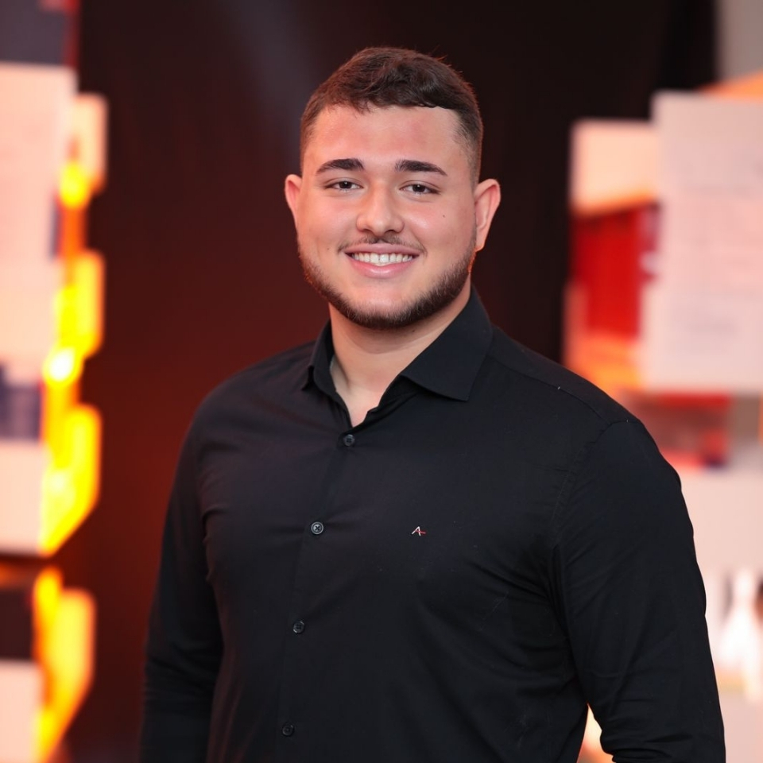
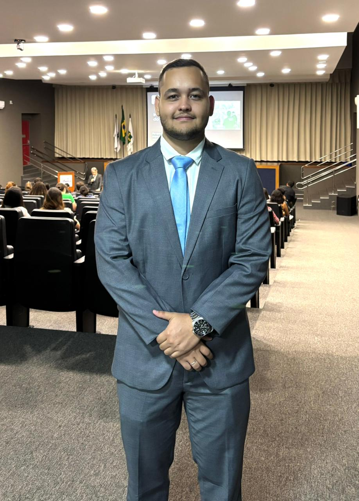
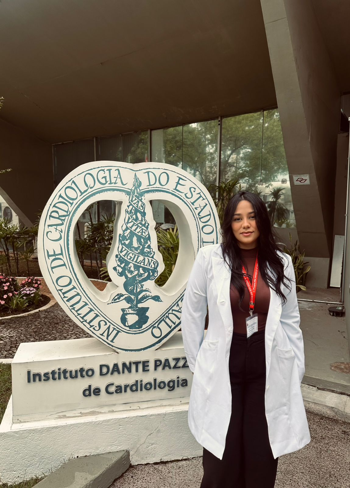
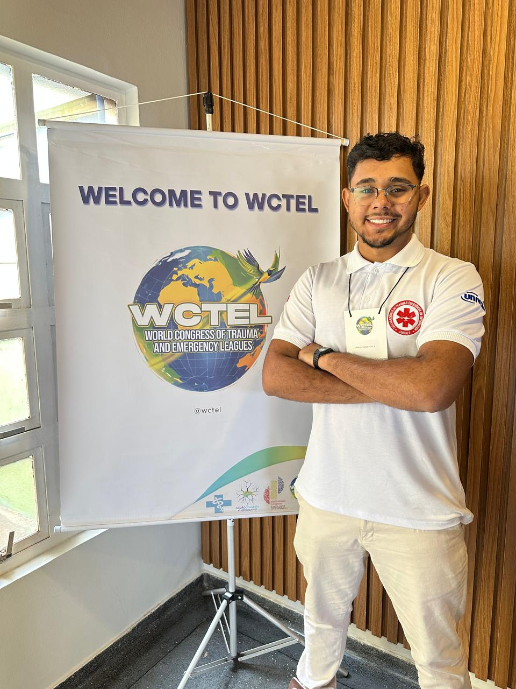

Protocolos
📰
Novo Protocolo de Atendimento Aprovado
O comitê aprova novo protocolo que melhora significativamente os procedimentos de atendimento inicial em trauma. A iniciativa une 12 centros de referência.
Ler maisO Comitê Brasileiro das Ligas do Trauma reúne profissionais de saúde de todas as regiões do Brasil em torno da excelência no atendimento ao paciente grave.
Fique atualizado sobre as últimas novidades do CoBraLT e do universo do trauma.
O comitê aprova novo protocolo que melhora significativamente os procedimentos de atendimento inicial em trauma. A iniciativa une 12 centros de referência.
Ler maisIniciamos programa de capacitação intensiva para profissionais que desejam integrar as ligas afiliadas ao CoBraLT em 2026.
Ler maisCoBraLT firma parceria com organizações de trauma internacionais para compartilhamento de diretrizes, pesquisas e experiências clínicas.
Ler maisMantenha-se atualizado com a agenda de eventos do CoBraLT e da área de trauma.
Sexta-feira, 9h às 18h. MCM, P.A.R.T.Y., mesa-redonda de múltiplas vítimas, Onda Amarela e muito mais. Inscrição gratuita.
Inscrever-se gratuitamente →CNNAQ: 9 e 10/06 · Congresso: 11 e 12/06. "Da ciência à assistência: Integrando Saberes." O maior congresso de queimaduras do Brasil.
Inscrever-se →21 a 23/05/2026 · 08h–18h. Edição conjunta do XXVIII CoLT e do II COTREM, unindo ligas acadêmicas, profissionais e especialistas nacionais e internacionais. Organizado pela UniRV – Campus Formosa em parceria com o CoBraLT.
Saiba mais →17 de Abril · Campinas, SP · Inscrições gratuitas!
Inscrição gratuita. Clique no botão abaixo para garantir sua vaga no formulário oficial.
Você será redirecionado para o formulário de inscrição.
Conecte sua instituição à maior rede de trauma do Brasil.
Preencha o formulário oficial de filiação para conectar sua liga à nossa rede.
Você será redirecionado para o Google Forms.
180+ instituições organizadas em 6 ligas regionais, cobrindo todo o território nacional.
Minas Gerais — 32 ligas acadêmicas filiadas cobrindo as principais universidades do estado.
32 ligas Ver ligas →São Paulo — o maior polo de trauma do Brasil, com ligas nas principais universidades do estado.
45 ligas Ver ligas →Rio de Janeiro e Espírito Santo — 17 ligas cobrindo as principais instituições da sub-região.
17 ligas Ver ligas →9 estados nordestinos — 24 ligas com protocolos adaptados à realidade regional.
24 ligas Ver ligas →7 estados — 23 ligas expandindo a excelência em trauma para a Amazônia e áreas remotas.
23 ligas Ver ligas →Paraná, Rio Grande do Sul e Santa Catarina — 20 ligas unidas em rede de qualidade assistencial.
20 ligas Ver ligas →De 1999 ao presente — construindo a maior rede acadêmica de trauma do Brasil.
Realização do primeiro Congresso Brasileiro das Ligas do Trauma (CoLT), idealizado por estudantes e coordenado por importantes nomes da cirurgia do trauma no Brasil, dando início à mobilização nacional das ligas.
Fundação oficial do Comitê Brasileiro das Ligas do Trauma, assumindo papel estratégico na articulação entre ligas, padronização de ações e fortalecimento institucional em todo o território nacional.
Criação de representações regionais e fortalecimento das ligas em todas as regiões do Brasil, consolidando uma rede ampla e integrada de ensino, pesquisa e extensão.
Implementação de protocolos clínicos padronizados nas ligas filiadas, aproximando o meio acadêmico da prática assistencial e reduzindo índices de morbimortalidade.
Durante a pandemia de COVID-19, o CoBraLT adotou novas tecnologias, ampliando seu alcance, fortalecendo a comunicação nacional e modernizando a gestão da rede.
Principal organização de ligas acadêmicas de trauma do Brasil, reunindo centenas de instituições e milhares de estudantes e profissionais comprometidos com a melhoria da assistência ao paciente traumatizado.



